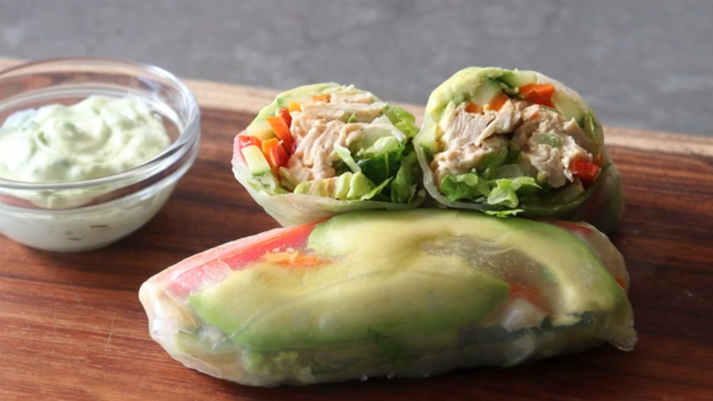

Chicken Salad Summer Roll

Description
Ingredients
- ½ pound shredded cooked chicken
- 2 tablespoons minced red onion
- ¼ cup thinly sliced celery
- salt and freshly ground black pepper to taste
- 1 pinch cayenne pepper, or to taste
- ¼ teaspoon smoked paprika
- ⅛ teaspoon ground cumin
- ¼ cup mayonnaise
- 6 small rice paper sheets
- 12 slices ripe avocado
- ½ cup thinly sliced red bell pepper strips
- ½ medium English cucumber, cut into strips
- ½ cup julienned carrot
- 2 cups chopped hearts of romaine lettuce
Steps
- Mix chicken, red onion, celery, salt, black pepper, cayenne pepper, smoked paprika, cumin, and mayonnaise until well blended. Cover and refrigerate until thoroughly chilled, at least 30 minutes.
- Working one at a time, dip a rice paper into cold water and let soak just until it starts to become flexible. Shake off most of the excess water and lay on a work surface. Place 2 slices of avocado in the center of the wrapper, about 1 inch in from the edge closest to you. Layer with bell pepper, cucumber, and carrot, spread about 1/4 cup chicken salad over top, and cover with lettuce.
- Grab the end of the wrapper closest to you and roll it up, gently stretching the flexible rice paper while tucking in the sides. Wet a second wrapper and wrap it around the first. Wrap the summer roll in barely damp paper towels and cover with plastic while you make the remaining 5 rolls.
- Mix mayonnaise, lemon juice, tarragon, basil, garlic, salt, and pepper together for dipping sauce.
- Serve summer rolls with dipping sauce on the side.